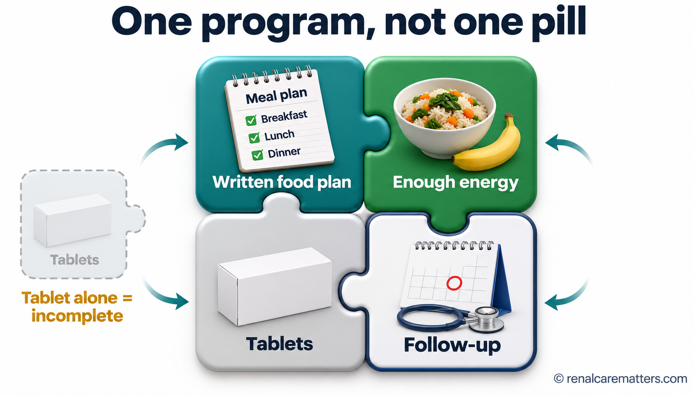
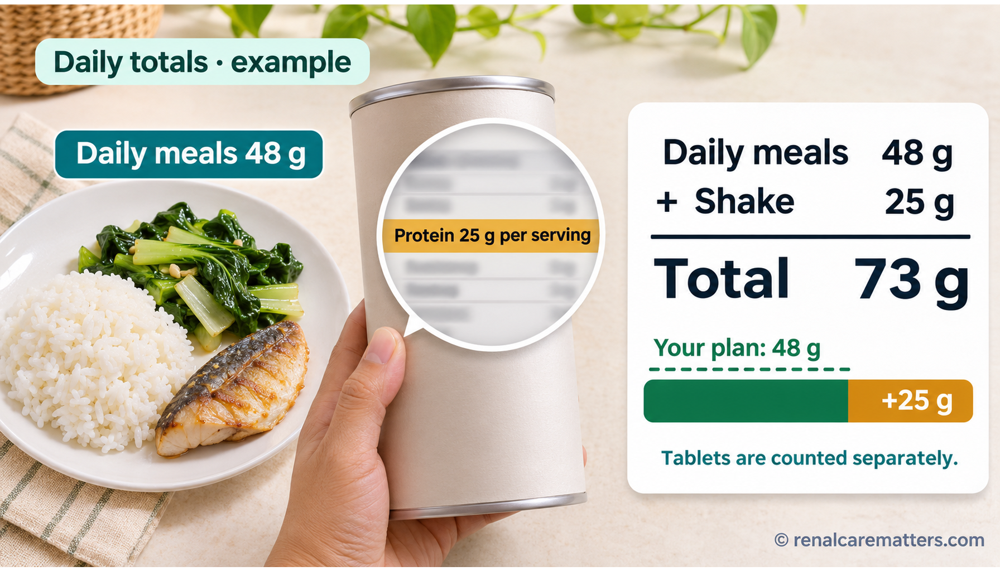
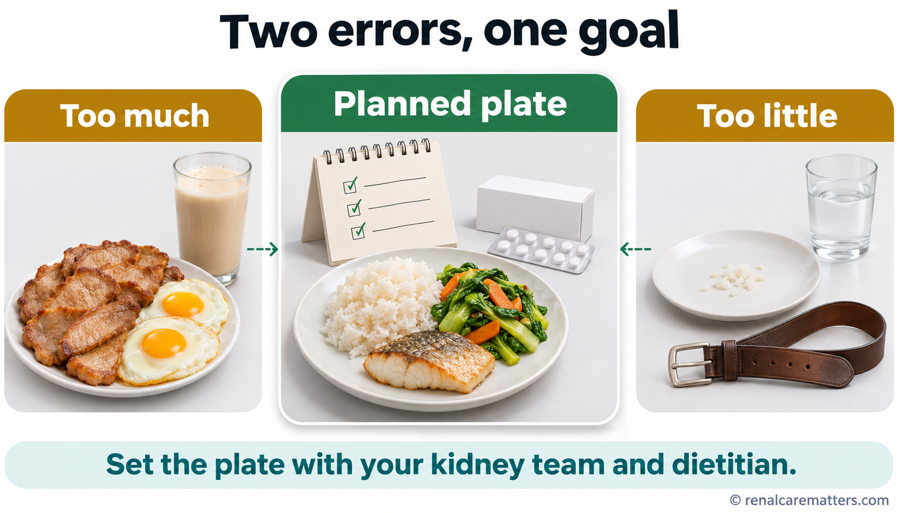
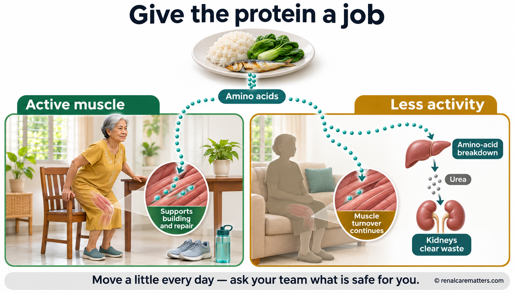

A food plan comes before the tabletsNauuna ang plano sa pagkain bago ang tabletaMag-una ang plano sa pagkaon sa dili pa ang tabletaMamuna ing planu king pamangan bayu ing tableta
Ketoanalogues are tablets sometimes used together with a carefully planned diet in selected people with chronic kidney disease (CKD). Before starting them, your care team needs to know three things: what you actually eat, whether you are getting enough energy (calories), and who will follow your kidney function and nutrition afterward.Ang ketoanalogue ay tabletang ginagamit kung minsan kasabay ng maingat na planong diyeta sa piling taong may chronic kidney disease (CKD, pangmatagalang sakit sa bato). Bago ito simulan, kailangang malaman ng iyong team ang tatlong bagay: ano talaga ang kinakain mo, sapat ba ang enerhiya (calories) mo, at sino ang susubaybay sa iyong bato at nutrisyon pagkatapos.Ang ketoanalogue usa ka tableta nga usahay gigamit uban sa maampingong giplano nga diyeta sa pinili nga mga tawo nga adunay chronic kidney disease (CKD, dugay nga sakit sa kidney). Sa dili pa kini sugdan, kinahanglan mahibaloan sa imong team ang tulo ka butang: unsa gyud ang imong gikaon, igo ba ang imong enerhiya (calories), ug kinsa ang mosubay sa imong kidney ug nutrisyon human niini.Ing ketoanalogue metung yang tableta a gagamitan nung kapilan kayabe ning maingat a meplanung diyeta kareng piling tau a atin chronic kidney disease (CKD, malawig a sakit king batu). Bayu me umpisan, kailangan nang balu ning team mu ing atlung bage: nanu talaga ing pamangan mu, sapat ya ing kekang enerhiya (calories), at ninu ing manyubaybay king batu at nutrisyon mu kaibat.
The tablets are not a permission slipHindi pahintulot ang tabletaDili pagtugot ang tabletaE ya pamipalubus ing tableta
The tablets do not give you permission to eat extra protein. They also do not make it safe to cut protein or meals on your own.Hindi ka pinapayagan ng tableta na kumain ng dagdag na protina. Hindi rin nito ginagawang ligtas ang pagbawas ng protina o pagkain nang ikaw lang ang nagpapasya.Dili ka tugotan sa tableta nga mokaon og dugang nga protina. Dili usab niini himoong luwas ang pagkunhod sa protina o pagkaon nga ikaw ra ang nagdesisyon.E na ka pipalubusan ning tableta a mangan dagdag a protina. E na naman pagawang ligtas ing pamanibawas king protina o pamangan nung ika mu bisa ing magdesisyun.
Already taking ketoanalogues?Umiinom ka na ng ketoanalogue?Nag-inom na ka og ketoanalogue?Mininum na kang ketoanalogue?
Do not stop on your own because of this guide, especially if you are on a very-low-protein diet. Bring your prescription, food plan, and supplement labels to your prescriber and ask whether the plan still fits you. “Hold” in the title means: do not start without a plan.Huwag itigil nang mag-isa dahil lang sa gabay na ito, lalo na kung nasa very-low-protein diet ka. Dalhin ang reseta, plano sa pagkain, at mga label ng supplement sa nagreseta at itanong kung akma pa ang plano sa iyo. Ang “Hold” sa pamagat ay nangangahulugang: huwag magsimula nang walang plano.Ayaw hunonga nga ikaw ra tungod lang niini nga giya, labi na kung naa ka sa very-low-protein diet. Dad-a ang reseta, plano sa pagkaon, ug mga label sa supplement ngadto sa nagreseta ug pangutan-a kung haom pa ba ang plano kanimo. Ang “Hold” sa titulo nagpasabot: ayaw pagsugod nga walay plano.Ali me itigil nung ika mu bisa uli mu pamu ning giya a ini, lalu na nung atyu ka king very-low-protein diet. Dalan me ing reseta, planu king pamangan, at reng label ning supplement king menyulat ning reseta, at kutnan me nung akma ya pa kekang ing planu. Ing “Hold” king titulu buri nang sabyan: ali ka mumpisa nung alang planu.
What these tablets are meant to doAno ang layunin ng mga tabletang itoUnsa ang katuyoan niini nga mga tabletaNanu ing kaplanan dareng tableta a reti
Protein in food is made of small building blocks called amino acids. Your body keeps the ones it needs to repair muscle and organs. What is left over is broken down, and its nitrogen becomes urea, a waste product the kidneys must remove. When the kidneys are weak, urea and other wastes from protein build up.Ang protina sa pagkain ay binubuo ng maliliit na bahagi na tinatawag na amino acid. Itinatabi ng katawan ang mga kailangan nito para ayusin ang kalamnan at mga organ. Ang sobra ay dinudurog, at ang nitrogen nito ay nagiging urea, isang dumi na kailangang ilabas ng bato. Kapag mahina ang bato, naiipon ang urea at iba pang dumi mula sa protina.Ang protina sa pagkaon gilangkob sa gagmay nga bahin nga gitawag og amino acid. Gitipigan sa lawas ang mga kinahanglanon niini aron ayohon ang kaunoran ug mga organ. Ang sobra gidugmok, ug ang nitrogen niini mahimong urea, usa ka hugaw nga kinahanglang ipagawas sa kidney. Kung huyang ang kidney, matipon ang urea ug uban pang hugaw gikan sa protina.Ing protina king pamangan bubuuan da ning malating bage a aus dang amino acid. Itatabi ning katawan ing kailangan na bang ayusan ing laman at reng organ. Ing labis gugurlan de, at ing nitrogen na magbalang urea, metung a dinat a kailangan nang ilwal ning batu. Nung malati ing batu, mipun ya ing urea at aliwa pang dinat ibat king protina.
Ketoanalogues are close relatives of some essential amino acids, but most of their parts arrive without the nitrogen. Inside the body they can pick up nitrogen that is already there and become usable amino acids. That is why, only when food protein is carefully lowered, they can help supply what the body needs while less waste is made.Ang ketoanalogue ay malapit na kamag-anak ng ilang essential amino acid, pero karamihan sa mga bahagi nito ay dumarating nang walang nitrogen. Sa loob ng katawan, nakakakuha ito ng nitrogen na naroon na at nagiging magagamit na amino acid. Kaya, kapag maingat lamang na ibinaba ang protina sa pagkain, nakakatulong ito na maibigay ang kailangan ng katawan habang mas kaunting dumi ang nagagawa.Ang ketoanalogue suod nga paryente sa pipila ka essential amino acid, apan kadaghanan sa mga bahin niini moabot nga walay nitrogen. Sulod sa lawas, makakuha kini og nitrogen nga anaa na ug mahimong magamit nga amino acid. Mao nga, kung maampingon lang nga gipaubos ang protina sa pagkaon, makatabang kini paghatag sa kinahanglan sa lawas samtang mas gamay nga hugaw ang mahimo.Ing ketoanalogue malapit a kamaganak da ning sablang essential amino acid, oneng ing kayabakan kareng bage na datang alang nitrogen. King lub ning katawan, makakua yang nitrogen a atyu na at magbalang magamit a amino acid. Anya, nung maingat mu bisang pababan ing protina king pamangan, makasaup ya bang ibie ing kailangan ning katawan kabang kakaunti ing dinat a mayayari.

Ketoanalogues work only as one piece of a program: a written food plan, enough energy, the tablets, and follow-up. The tablet alone is an incomplete puzzle.Gumagana lamang ang ketoanalogue bilang isang bahagi ng programa: nakasulat na plano sa pagkain, sapat na enerhiya, ang tableta, at follow-up. Kulang na puzzle ang tableta lang.Molihok lang ang ketoanalogue isip usa ka bahin sa programa: sinulat nga plano sa pagkaon, igo nga enerhiya, ang tableta, ug follow-up. Kulang nga puzzle ang tableta ra.Gumana ya mu ing ketoanalogue bilang metung a bage ning programa: misulat a planu king pamangan, sapat a enerhiya, ing tableta, at follow-up. Kulang a puzzle ing tableta mu bisa.
Not the same as theseHindi ito katulad ng mga itoDili kini parehas niiniE ya kapareu dareni
Ketoanalogues are not ketone drinks, a “keto” diet, creatine, or ordinary protein powder. The names sound alike; the purpose is opposite. A ketogenic diet is usually high in fat and often in protein; protein powder adds protein; ketoanalogues are meant for a diet that lowers protein under supervision.Ang ketoanalogue ay hindi ketone drink, “keto” diet, creatine, o karaniwang protein powder. Magkatunog ang pangalan; magkasalungat ang layunin. Ang ketogenic diet ay kadalasang mataas sa taba at madalas sa protina; nagdadagdag ng protina ang protein powder; ang ketoanalogue ay para sa diyetang nagbababa ng protina nang may gabay.Ang ketoanalogue dili ketone drink, “keto” diet, creatine, o ordinaryong protein powder. Parehas ang tingog sa ngalan; supak ang katuyoan. Ang ketogenic diet kasagaran taas sa tambok ug kanunay sa protina; nagdugang og protina ang protein powder; ang ketoanalogue para sa diyeta nga nagpaubos sa protina nga adunay giya.Ing ketoanalogue e ketone drink, “keto” diet, creatine, o karaniwang protein powder. Magkatunug la ing lagyu; magkasalungat la ing kaplanan. Ing ketogenic diet karaniwang matas king taba at malagad king protina; magdagdag protina ing protein powder; ing ketoanalogue para king diyeta a magpababa king protina a atin gabay.
The tablets do not cancel extra proteinHindi binubura ng tableta ang dagdag na protinaDili papason sa tableta ang dugang nga protinaE ne buburan ning tableta ing dagdag a protina
Some people hear “kidney tablets” and think the tablets now protect them, so they add a bigger serving of meat, an extra egg, or a protein shake “for strength.” This is an understandable mistake, and nobody has measured how often it happens. But it works against the plan: the tablets were meant for a diet with less protein, not more.May mga taong nakakarinig ng “tableta para sa bato” at iniisip na pinoprotektahan na sila nito, kaya nagdadagdag sila ng mas malaking serving ng karne, dagdag na itlog, o protein shake “para lumakas.” Naiintindihang pagkakamali ito, at wala pang sumukat kung gaano ito kadalas. Pero salungat ito sa plano: ang tableta ay para sa diyetang may mas kaunting protina, hindi mas marami.Adunay mga tawo nga makadungog og “tableta para sa kidney” ug maghunahuna nga gipanalipdan na sila niini, mao nga nagdugang sila og mas dako nga serving sa karne, dugang nga itlog, o protein shake “para mokusog.” Masabtan kini nga sayop, ug wala pay nakasukod kung unsa kini kadalas. Apan supak kini sa plano: ang tableta para sa diyeta nga mas gamay og protina, dili mas daghan.Atin taung makarinig “tableta para king batu” at isipan dang protektadu na la, anya magdagdag lang mas maragul a serving ning karni, dagdag a ebun, o protein shake “bang kumusug.” Maintindian ya ing mali a ini, at ala pang sinukat nung makanyang dalas ya. Oneng salungat ya king planu: ing tableta para king diyeta a mas kaunti ing protina, e mas dakal.
A worked example (hypothetical)Halimbawang kuwenta (hypothetical)Pananglitan nga kuwenta (hypothetical)Alimbawang kuwenta (hypothetical)
| Food protein your clinician already prescribedProtina sa pagkain na nireseta na ng iyong doktorProtina sa pagkaon nga gireseta na sa imong doktorProtina king pamangan a meresetang na ning doktor mu | 48 g/day |
| Protein from meals (rice, fish, vegetables, snacks)Protina mula sa mga kain (kanin, isda, gulay, meryenda)Protina gikan sa mga kan-on (kan-on, isda, utanon, meryenda)Protina ibat kareng pamangan (nasi, asan, gule, meryenda) | 48 g |
| + One protein shake (label: 25 g per serving × 1)+ Isang protein shake (label: 25 g bawat serving × 1)+ Usa ka protein shake (label: 25 g matag serving × 1)+ Metung a protein shake (label: 25 g king balang serving × 1) | 25 g |
| Total from food and drinksKabuuan mula sa pagkain at inuminKinatibuk-an gikan sa pagkaon ug ilimnonKabuuan ibat king pamangan at inumin | 73 g/day |
| Above the prescribed amountLampas sa niresetaLabaw sa giresetaLampas king meresetang | +25 g (+52.1%) |
Arithmetic only. 52.1% more protein than the plan is not 52.1% more kidney risk, and it does not tell you what to change. Bring the shake label to your kidney team.Kuwenta lamang. Ang 52.1% na dagdag na protina sa plano ay hindi 52.1% na dagdag na panganib sa bato, at hindi nito sinasabi kung ano ang babaguhin. Dalhin ang label ng shake sa iyong kidney team.Kuwenta lang. Ang 52.1% nga dugang nga protina sa plano dili 52.1% nga dugang nga peligro sa kidney, ug dili kini mosulti kung unsa ang usbon. Dad-a ang label sa shake ngadto sa imong kidney team.Kuwenta mu bisa. Ing 52.1% a dagdag a protina king planu e 52.1% a dagdag a panganib king batu, at e ne sasabyan nung nanu ing gulisan. Dalan me ing label ning shake king kidney team mu.

Count protein from everything you eat and drink — including shakes, milk drinks, and “diabetes” or “recovery” products. The tablets are counted separately by your prescriber.Bilangin ang protina mula sa lahat ng kinakain at iniinom mo — kasama ang shake, inuming gatas, at mga produktong “pang-diabetes” o “pang-recovery.” Hiwalay na binibilang ng nagreseta ang tableta.Ihapa ang protina gikan sa tanan nimong gikaon ug giinom — lakip ang shake, ilimnong gatas, ug mga produkto nga “para sa diabetes” o “para sa recovery.” Lahi nga ihapon sa nagreseta ang tableta.Bilangan me ing protina ibat king eganagang pamangan at inumin mu — kayabe ing shake, inumin a gatas, at reng produktu a “para king diabetes” o “para king recovery.” Aliwa ing pamilang ning menyulat ning reseta king tableta.
- Ask yourself: since starting the tablets, have I added a shake, milk drink, larger meat or egg portions, or any nutrition supplement?Tanungin ang sarili: mula nang magsimula ng tableta, nagdagdag ba ako ng shake, inuming gatas, mas malaking karne o itlog, o anumang nutrition supplement?Pangutan-a ang kaugalingon: sukad nagsugod sa tableta, nagdugang ba ko og shake, ilimnong gatas, mas dako nga karne o itlog, o bisan unsang nutrition supplement?Kutnan me ing sarili mu: manibat mumpisa ka king tableta, nagdagdag ka ba ning shake, inumin a gatas, mas maragul a karni o ebun, o nanumang nutrition supplement?
- Bring the packages (or clear photos of the labels) of every powder, drink, and supplement to your visit.Dalhin ang mga pakete (o malinaw na litrato ng label) ng bawat powder, inumin, at supplement sa iyong pagbisita.Dad-a ang mga pakete (o klaro nga litrato sa label) sa matag powder, ilimnon, ug supplement sa imong bisita.Dalan mo reng pakete (o malino a litratu ning label) ning balang powder, inumin, at supplement king pamamisita mu.
- Tell the team who buys and cooks the food. The plan has to reach the person holding the ladle.Sabihin kung sino ang bumibili at nagluluto. Kailangang makarating ang plano sa taong may hawak ng sandok.Isulti kung kinsa ang mopalit ug moluto. Kinahanglan makaabot ang plano sa tawo nga naggunit sa luwag.Sabyan me nung ninu ing manyaliwa at maglutu. Kailangan datang ing planu king taung kakapitan king sanduk.
- Count all sources: rice, bread, noodles, beans and tofu, snacks, and drinks all contain some protein. Plant protein still counts.Bilangin ang lahat ng pinagmumulan: may kaunting protina ang kanin, tinapay, pansit, beans at tokwa, meryenda, at inumin. Kasama pa rin sa bilang ang protina mula sa halaman.Ihapa ang tanang gigikanan: adunay protina ang kan-on, pan, pansit, beans ug tokwa, meryenda, ug ilimnon. Apil gihapon sa ihap ang protina gikan sa tanom.Bilangan me ing eganagang pikuanan: atin protina ing nasi, tinape, pansit, beans at tokwa, meryenda, at inumin. Kayabe ya pa rin king bilang ing protina ibat king tanaman.
Cutting food on your own is also riskyMapanganib din ang pagbabawas ng pagkain nang mag-isaPeligroso usab ang pagkunhod sa pagkaon nga ikaw raMapanganib ya murin ing pamanibawas king pamangan nung ika mu bisa
The other mistake is to remove meat, fish, eggs, milk, and beans all at once — and to eat less overall. When the body does not get enough energy, it burns its own muscle for fuel. That releases the same nitrogen waste the diet was trying to lower, and it leaves you weaker. A very-low-protein diet is only safe when someone checks that you are eating enough and keeping your weight and strength.Ang isa pang pagkakamali ay alisin nang sabay-sabay ang karne, isda, itlog, gatas, at beans — at kumain nang mas kaunti sa kabuuan. Kapag kulang ang enerhiya ng katawan, sinusunog nito ang sarili nitong kalamnan bilang gasolina. Naglalabas ito ng parehong nitrogen na dumi na sinusubukang ibaba ng diyeta, at nanghihina ka. Ligtas lang ang very-low-protein diet kapag may tumitingin na sapat ang kinakain mo at napapanatili ang iyong timbang at lakas.Ang laing sayop mao ang pagtangtang dungan sa karne, isda, itlog, gatas, ug beans — ug mokaon og mas gamay sa kinatibuk-an. Kung kulang ang enerhiya sa lawas, sunogon niini ang kaugalingong kaunoran isip gasolina. Mopagawas kini sa parehas nga nitrogen nga hugaw nga gisulayan pagpaubos sa diyeta, ug maluya ka. Luwas lang ang very-low-protein diet kung adunay mosusi nga igo ang imong gikaon ug mapadayon ang imong timbang ug kusog.Ing aliwang mali iya ing pamaliwa king karni, asan, ebun, gatas, at beans king metung a pamikatagun — at mangan mas kaunti king kabuuan. Nung kulang ing enerhiya ning katawan, puruan na ing sariling laman bilang gasolina. Ilwal na ing kaparehung nitrogen a dinat a pakasubukan nang pababan ning diyeta, at malati ka. Ligtas ya mu ing very-low-protein diet nung atin manlawe nung sapat ing pamangan mu at mapanatili ing timbang at kusug mu.
Error 1 — too muchPagkakamali 1 — sobraSayop 1 — sobraMali 1 — labis
Bigger meat portions or a daily protein shake because “the tablets protect me.”Mas malaking karne o araw-araw na protein shake dahil “pinoprotektahan ako ng tableta.”Mas dako nga karne o adlaw-adlaw nga protein shake tungod kay “gipanalipdan ko sa tableta.”Mas maragul a karni o aldo-aldo a protein shake uli ta “protektan na ku ning tableta.”
Error 2 — too littlePagkakamali 2 — kulangSayop 2 — kulangMali 2 — kulang
Skipping protein foods and meals without a plan, with weight and strength slipping.Paglaktaw sa protina at pagkain nang walang plano, habang bumababa ang timbang at lakas.Paglaktaw sa protina ug pagkaon nga walay plano, samtang mous-os ang timbang ug kusog.Paglaktaw king protina at pamangan nung alang planu, kabang mababa ing timbang at kusug.
Both errors can happen in the same home: small meals at the table, and a large protein drink between meals. That is why the visit should ask about every meal and every drink.Maaaring mangyari ang dalawa sa iisang bahay: maliliit na kain sa mesa, at malaking protein drink sa pagitan ng kain. Kaya dapat itanong sa pagbisita ang bawat kain at bawat inumin.Mahimong mahitabo ang duha sa usa ra ka balay: gagmay nga kan-on sa lamesa, ug dako nga protein drink taliwala sa kan-on. Mao nga kinahanglan pangutan-on sa bisita ang matag kan-on ug matag ilimnon.Malyaring mayari ing adwa king metung mung bale: malating pamangan king lamesa, at maragul a protein drink king pagitan ning pamangan. Anya dapat kutnan king pamamisita ing balang pamangan at balang inumin.

Two opposite errors, one goal: the planned plate in the middle, set with your kidney team and renal dietitian.Dalawang magkasalungat na pagkakamali, iisang layunin: ang planadong plato sa gitna, na itinakda kasama ang iyong kidney team at renal dietitian.Duha ka supak nga sayop, usa ka tumong: ang giplano nga plato sa tunga, gitakda uban sa imong kidney team ug renal dietitian.Adwang magkasalungat a mali, metung a kaplanan: ing meplanung plato king pengari, a metakda kayabe ning kidney team mu at renal dietitian.
Move your muscles so the protein has work to doGalawin ang kalamnan para may trabaho ang protinaLihoka ang kaunoran aron adunay trabaho ang protinaGamitan me ing laman ba atin obra ing protina
After a meal, your body decides where the amino acids go. Muscles that are used — standing up from a chair, climbing stairs, carrying groceries, lifting light weights — send a signal to build and repair, and they pull amino acids in. Muscles that rest all day send almost no signal, so more of those amino acids are broken down into urea instead. On a low-protein plan, where every gram should count, activity is how you make the protein you eat — and the building blocks the tablets help form — end up as muscle rather than waste.Pagkatapos kumain, ang katawan ang nagpapasya kung saan pupunta ang amino acid. Ang kalamnang ginagamit — pagtayo mula sa upuan, pag-akyat sa hagdan, pagbuhat ng pinamili, pagbuhat ng magaang pabigat — ay nagpapadala ng senyas na magtayo at mag-ayos, at hinihila nito ang amino acid. Ang kalamnang buong araw na nakapahinga ay halos walang senyas, kaya mas maraming amino acid ang nauuwi sa urea. Sa low-protein na plano, kung saan mahalaga ang bawat gramo, ang paggalaw ang paraan para ang protinang kinakain mo — at ang mga bahaging tinutulungang buuin ng tableta — ay maging kalamnan at hindi dumi.Human mokaon, ang lawas ang modesisyon kung asa moadto ang amino acid. Ang kaunoran nga gigamit — pagtindog gikan sa lingkuranan, pagsaka sa hagdan, pagbitbit sa gipamalit, pag-alsa og gaan nga pabug-at — mopadala og senyas nga motukod ug moayo, ug kuhaon niini ang amino acid. Ang kaunoran nga nagpahulay sa tibuok adlaw halos walay senyas, mao nga mas daghang amino acid ang mahimong urea. Sa low-protein nga plano, diin importante ang matag gramo, ang paglihok ang paagi aron ang protina nga imong gikaon — ug ang mga bahin nga gitabangan sa tableta paghimo — mahimong kaunoran ug dili hugaw.Kaibat mangan, ing katawan ing magdesisyun nung nokarin munta ing amino acid. Ing laman a gagamitan — pamikatalakad ibat king upuan, pamanik king agdan, pamuat kareng sinaliwa, pamuat magaan a pabigat — magpadala yang senyas bang magbuo at mag-ayus, at kuanan na ing amino acid. Ing laman a magpainawa king kabilan aldo, alos alang senyas, anya mas dakal a amino acid ing magbalang urea. King low-protein a planu, nung nu mayalaga ing balang gramu, ing pamagkilos ing paralan ba ing protina a pamangan mu — at ing bage a tutulungan ning tableta bang buuan — magbalang laman, e dinat.
In a small study of older adults with kidney disease on a low-protein diet, those who did strength training for 12 weeks kept their weight and gained muscle and strength, while those who did not lost strength. International kidney guidelines advise about 150 minutes a week of moderate activity, or whatever your heart and body can safely handle.Sa isang maliit na pag-aaral ng matatandang may sakit sa bato na nasa low-protein diet, ang mga nag-strength training nang 12 linggo ay napanatili ang timbang at nadagdagan ang kalamnan at lakas, habang humina ang mga hindi nag-ehersisyo. Pinapayo ng mga internasyonal na guideline sa bato ang mga 150 minuto kada linggo ng katamtamang aktibidad, o kung ano ang ligtas na kaya ng iyong puso at katawan.Sa usa ka gamay nga pagtuon sa mga tigulang nga adunay sakit sa kidney nga naa sa low-protein diet, ang mga nag-strength training sulod sa 12 ka semana nakapadayon sa ilang timbang ug nadugangan ang kaunoran ug kusog, samtang naluya ang wala. Gitambagan sa internasyonal nga mga guideline sa kidney ang mga 150 ka minuto matag semana sa kasarangang kalihokan, o unsay luwas nga makaya sa imong kasingkasing ug lawas.King metung a malating pamag-aral kareng matua a atin sakit king batu a atyu king low-protein diet, dareng menyampong strength training king 12 a dominggu, mepanatili ing timbang ra at miragdagan ing laman at kusug ra, kabang dareng ala, melati. Ipayu dareng internasyonal a guideline king batu ing malapit 150 minutu king dominggu a katamtamang aktibidad, o nanu ing ligtas a kaya ning pusu at katawan mu.

Used muscles pull amino acids in to build and repair. Resting muscles leave more to be turned into urea, the waste your kidneys must clear.Hinihila ng ginagamit na kalamnan ang amino acid para magtayo at mag-ayos. Ang nakapahingang kalamnan ay nag-iiwan ng mas marami na nagiging urea, ang dumi na kailangang ilabas ng bato.Kuhaon sa gigamit nga kaunoran ang amino acid aron motukod ug moayo. Ang nagpahulay nga kaunoran mobilin og mas daghan nga mahimong urea, ang hugaw nga kinahanglang ipagawas sa kidney.Kuanan ning gagamitan a laman ing amino acid bang mamuo at mag-ayus. Ing laman a magpainawa iwanan na ing mas dakal a magbalang urea, ing dinat a kailangan nang ilwal ning batu.
Simple ways to start (ask your team first)Simpleng paraan para magsimula (magtanong muna sa team)Simple nga paagi sa pagsugod (pangutana una sa team)Simpling paralan bang mumpisa (kutnan mu pa ing team)
Chair stands: stand up and sit down slowly, 8–10 times, holding a table if needed. Wall push-ups and light weights — water bottles count — 2 to 3 days a week. Walk 10 minutes after meals. Start low and build up week by week.Pagtayo mula sa upuan: tumayo at umupo nang dahan-dahan, 8–10 beses, humawak sa mesa kung kailangan. Wall push-up at magaang pabigat — puwede ang bote ng tubig — 2 hanggang 3 araw kada linggo. Maglakad nang 10 minuto pagkatapos kumain. Magsimula nang mababa at dagdagan linggo-linggo.Pagtindog gikan sa lingkuranan: tindog ug lingkod nga hinay, 8–10 ka higayon, kupti ang lamesa kung kinahanglan. Wall push-up ug gaan nga pabug-at — pwede ang botelya sa tubig — 2 hangtod 3 ka adlaw matag semana. Lakaw og 10 ka minuto human mokaon. Sugdi nga ubos ug dugangi matag semana.Pamikatalakad ibat king upuan: tumalakad at lumuklu king mabagal, 8–10 besis, kapitan ing lamesa nung kailangan. Wall push-up at magaan a pabigat — malyari ing bote ning danum — 2 anggang 3 aldo king dominggu. Lumakad 10 minutu kaibat mangan. Mumpisa king mababa at dagdagan dominggu-dominggu.
Exercise is not a reason to add a protein shakeHindi dahilan ang ehersisyo para magdagdag ng protein shakeDili rason ang ehersisyo aron magdugang og protein shakeE dahilan ing ehersisyo bang magdagdag protein shake
If you start exercising, keep to your written food plan and ask your team whether anything should change. More activity often needs more energy (calories from rice, root crops, healthy oils) — not automatically more protein. Ask first if you have heart disease, chest pain on effort, dizziness, falls, or a recent hospital stay.Kung magsisimula kang mag-ehersisyo, sundin pa rin ang nakasulat na plano sa pagkain at itanong sa team kung may dapat baguhin. Ang mas maraming galaw ay madalas nangangailangan ng mas maraming enerhiya (calories mula sa kanin, lamang-ugat, malusog na mantika) — hindi awtomatikong mas maraming protina. Magtanong muna kung may sakit sa puso, pananakit ng dibdib kapag nagpapagod, pagkahilo, pagkakatumba, o bagong pagka-ospital.Kung magsugod ka og ehersisyo, sunda gihapon ang sinulat nga plano sa pagkaon ug pangutan-a ang team kung adunay angay usbon. Ang dugang nga paglihok kasagaran nagkinahanglan og dugang enerhiya (calories gikan sa kan-on, lagutmon, himsog nga mantika) — dili awtomatikong dugang protina. Pangutana una kung adunay sakit sa kasingkasing, sakit sa dughan inig kapoy, pagkalipong, pagkatumba, o bag-o lang na-ospital.Nung mumpisa kang mag-ehersisyo, tuparan me pa rin ing misulat a planu king pamangan at kutnan me ing team nung atin dapat gulisan. Ing mas dakal a pamagkilos karaniwan kailangan mas dakal a enerhiya (calories ibat king nasi, lamang-gamut, malusug a mantica) — e awtomatikung mas dakal a protina. Kumutang ka pa nung atin kang sakit king pusu, sakit king dibdib nung mapagal, pamakaliliu, pamagbagsak, o bayu kang me-ospital.
Four questions to answer before the first tabletApat na tanong bago ang unang tabletaUpat ka pangutana sa dili pa ang unang tabletaApat a kutang bayu ing mumunang tableta
“Hold” is about the tablets — not your other kidney careAng “Hold” ay para sa tableta — hindi sa iba mong gamutan sa batoAng “Hold” para sa tableta — dili sa uban nimong pag-atiman sa kidneyIng “Hold” para king tableta — e para king aliwa mung panulu king batu
Waiting for a nephrologist and renal dietitian should never pause your blood pressure, diabetes, or kidney-protecting medicines. Your current doctor stays in charge of your care until the handoff is done.Ang paghihintay sa nephrologist at renal dietitian ay hindi dapat magpatigil sa iyong gamot sa presyon, diabetes, o pamprotekta sa bato. Ang kasalukuyan mong doktor ang mananagot sa iyong pangangalaga hanggang matapos ang handoff.Ang paghulat sa nephrologist ug renal dietitian dili angay mohunong sa imong tambal sa presyon, diabetes, o pangpanalipod sa kidney. Ang imong kasamtangang doktor ang responsable sa imong pag-atiman hangtod mahuman ang handoff.Ing pamanaya king nephrologist at renal dietitian e dapat makapatigil king gamut mu king presyun, diabetes, o pamprotekta king batu. Ing doktor mu ngeni ing manyabat king pamanalaga keka anggang mayari ing handoff.
If you are already on ketoanaloguesKung umiinom ka na ng ketoanalogueKung nag-inom ka na og ketoanalogueNung mininum na kang ketoanalogue
Bring your prescription, your food plan, recent blood tests, and all supplement labels to your next appointment. Ask whether the tablets and the diet still fit your needs. If nobody has explained the food plan to you, contact your prescriber for clarification. Do not independently start a very-low-protein diet or change the number of tablets.Dalhin ang iyong reseta, plano sa pagkain, mga bagong blood test, at lahat ng label ng supplement sa susunod mong appointment. Itanong kung akma pa sa iyo ang tableta at ang diyeta. Kung walang nagpaliwanag sa iyo ng plano sa pagkain, kausapin ang nagreseta. Huwag magsimula nang mag-isa ng very-low-protein diet o baguhin ang dami ng tableta.Dad-a ang imong reseta, plano sa pagkaon, bag-ong blood test, ug tanang label sa supplement sa sunod nimong appointment. Pangutan-a kung haom pa kanimo ang tableta ug ang diyeta. Kung walay nagpasabot kanimo sa plano sa pagkaon, kontaka ang nagreseta. Ayaw pagsugod nga ikaw ra og very-low-protein diet o usba ang gidaghanon sa tableta.Dalan me ing reseta mu, planu king pamangan, bayung blood test, at eganagang label ning supplement king susunod mung appointment. Kutnan me nung akma la pa keka ing tableta at ing diyeta. Nung ala pang menyalaysay keka ning planu king pamangan, kausapan me ing menyulat ning reseta. Ali ka mumpisa nung ika mu bisa ning very-low-protein diet o gulisan ing dakal ning tableta.
Tell your team early if…Sabihin agad sa iyong team kung…Isulti dayon sa imong team kung…Sabyan me agad king team mu nung…
you are eating much less, losing weight without trying, feeling weaker, vomiting or unable to eat, admitted to hospital, told your calcium is high, or cannot afford the tablets and the food plan together.mas kaunti na ang kinakain mo, pumapayat nang hindi sinasadya, nanghihina, nagsusuka o hindi makakain, na-admit sa ospital, sinabihang mataas ang calcium mo, o hindi kaya ang tableta at plano sa pagkain nang sabay.mas gamay na ang imong gikaon, mamiyuos nga wala tuyoa, nagkaluya, nagsuka o dili makakaon, na-admit sa ospital, giingnan nga taas ang imong calcium, o dili makaya ang tableta ug plano sa pagkaon nga dungan.mas kaunti na ing pamangan mu, mamayat nung e sinadya, malati, mumuta o e makapangan, me-admit king ospital, sinabyan dang matas ing calcium mu, o e kaya ing tableta at planu king pamangan king metung a pamikatagun.
Go to the emergency room now — do not wait for a nutrition appointment — if you have:Pumunta agad sa emergency room — huwag hintayin ang nutrition appointment — kung may:Adto dayon sa emergency room — ayaw hulata ang nutrition appointment — kung adunay:Munta ka agad king emergency room — ali mu antayan ing nutrition appointment — nung atin:
severe shortness of breath, chest pain, new confusion or unusual drowsiness, a seizure, fainting or collapse, a very slow, very fast, or irregular heartbeat, or little or no urine during an illness. Bring your medicine list and the tablet box. This guide cannot tell you the cause; emergency care can.matinding hirap sa paghinga, pananakit ng dibdib, bagong pagkalito o di-pangkaraniwang pag-aantok, kombulsyon, pagkahimatay o pagbagsak, napakabagal, napakabilis, o iregular na tibok ng puso, o kaunti o walang ihi habang may sakit. Dalhin ang listahan ng gamot at ang kahon ng tableta. Hindi masasabi ng gabay na ito ang sanhi; masasabi ito ng emergency care.grabe nga kalisod sa pagginhawa, sakit sa dughan, bag-ong kalibog o dili kasagaran nga pagkahinanok, kombulsyon, pagkaluya o pagkatumba, hinay kaayo, paspas kaayo, o dili regular nga pitik sa kasingkasing, o gamay o walay ihi samtang masakiton. Dad-a ang listahan sa tambal ug ang kahon sa tableta. Dili masulti niini nga giya ang hinungdan; masulti kini sa emergency care.makasakit a kasakitan king pamanyawa, sakit king dibdib, bayung pamakalitu o e karaniwang pamanuknang, kombulsyun, pamakaimatay o pamagbagsak, mabagal dalit, malagwa dalit, o e regular a pitik ning pusu, o kaunti o alang ihi kabang masakit. Dalan me ing listahan ning gamut at ing kahon ning tableta. E na asabi ning giya a ini ing sanhi; asabi na ning emergency care.
Helpful for some, in a supervised programNakakatulong sa ilan, sa isang programang may gabayMakatabang sa pipila, sa programa nga adunay giyaMakasaup kareng aliwa, king programa a atin gabay
In one careful study, selected adults who were well nourished and very good at following a vegetarian very-low-protein diet with ketoanalogues had fewer serious kidney events over about 15 months than those on a standard low-protein diet. In a later study of real clinic patients, simply prescribing the supplemented very-low-protein diet did not do better — partly because many people could not eat that way for long. A 2026 study in people with type 2 diabetes found a slower decline in one kidney blood test but not in another, so the results need confirming.Sa isang maingat na pag-aaral, ang piling mga adult na maayos ang nutrisyon at napakahusay sumunod sa vegetarian very-low-protein diet na may ketoanalogue ay nagkaroon ng mas kaunting malubhang pangyayari sa bato sa loob ng mga 15 buwan kaysa sa mga nasa karaniwang low-protein diet. Sa mas bagong pag-aaral ng totoong mga pasyente sa clinic, hindi naging mas mahusay ang basta pag-reseta ng supplemented very-low-protein diet — bahagya dahil maraming tao ang hindi nakakain nang ganoon nang matagal. Isang pag-aaral noong 2026 sa mga may type 2 diabetes ang nakakita ng mas mabagal na pagbaba sa isang kidney blood test pero hindi sa isa pa, kaya kailangan pang kumpirmahin.Sa usa ka maampingong pagtuon, ang pinili nga mga hamtong nga maayo ang nutrisyon ug maayo kaayo mosunod sa vegetarian very-low-protein diet nga adunay ketoanalogue nakabaton og mas gamay nga seryoso nga hitabo sa kidney sulod sa mga 15 ka bulan kaysa sa naa sa standard low-protein diet. Sa mas bag-ong pagtuon sa tinuod nga mga pasyente sa clinic, wala nahimong mas maayo ang basta pag-reseta sa supplemented very-low-protein diet — bahin tungod kay daghang tawo ang dili makakaon niana sulod sa dugay. Usa ka pagtuon sa 2026 sa mga adunay type 2 diabetes nakakita og mas hinay nga pagkunhod sa usa ka kidney blood test apan dili sa lain, mao nga kinahanglan pa kini kumpirmahon.King metung a maingat a pamag-aral, reng piling matua a mayap ing nutrisyon at mayap dalit tumupad king vegetarian very-low-protein diet a atin ketoanalogue, mekatagun lang mas kaunting malalang pangyayari king batu kilub ning 15 bulan kesa kareng atyu king karaniwang low-protein diet. King mas bayung pamag-aral kareng tutung pasyente king clinic, e mekapagmayap ing pamag-reseta mu ning supplemented very-low-protein diet — bage uli ta dakal a tau ing e makapangan makanyan king malawig. Metung a pamag-aral king 2026 kareng atin type 2 diabetes ing mekakit mas mabagal a pamababa king metung a kidney blood test oneng e king aliwa, anya kailangan pang kumpirman.
The honest bottom lineAng tapat na buodAng matinud-anon nga sumadaIng tapat a buod
Some supervised programs have helped selected patients postpone dialysis. Results vary between studies. No study shows that taking the tablets without the dietary program prevents kidney failure, and none shows the tablets reverse CKD. A better creatinine number alone is not proof the kidneys healed — diet and muscle change that number too.Nakatulong ang ilang programang may gabay sa piling pasyente na maantala ang dialysis. Nag-iiba ang resulta sa bawat pag-aaral. Walang pag-aaral na nagpapakitang napipigilan ng tableta, kung walang programa sa pagkain, ang kidney failure, at walang nagpapakitang binabalik nito ang CKD. Ang mas magandang creatinine ay hindi patunay na gumaling ang bato — nababago rin ng diyeta at kalamnan ang numerong iyon.Nakatabang ang pipila ka programa nga adunay giya sa pinili nga pasyente nga maantala ang dialysis. Lahi-lahi ang resulta sa matag pagtuon. Walay pagtuon nga nagpakita nga mapugngan sa tableta, kung walay programa sa pagkaon, ang kidney failure, ug walay nagpakita nga ibalik niini ang CKD. Ang mas maayo nga creatinine dili pamatuod nga naayo ang kidney — mausab usab sa diyeta ug kaunoran kana nga numero.Mekasaup ing sablang programa a atin gabay kareng piling pasyente bang mabalam ing dialysis. Magkaiba ing resulta king balang pamag-aral. Alang pamag-aral a mamakit a apigilan ning tableta, nung alang programa king pamangan, ing kidney failure, at alang mamakit a ibalik na ing CKD. Ing mas mayap a creatinine e patunay a meayus ing batu — agulisan ya murin ning diyeta at laman ing numeru a ita.
Questions to bring to your appointmentMga tanong na dadalhin sa appointmentMga pangutana nga dad-on sa appointmentReng kutang a dalan king appointment
- What benefit are we trying to achieve in my situation?Anong benepisyo ang hinahangad natin sa aking sitwasyon?Unsang benepisyo ang atong gitinguha sa akong sitwasyon?Nanung benepisyu ing pakasabukan tang abutan king sitwasyun ku?
- Who will write and explain my food plan?Sino ang susulat at magpapaliwanag ng aking plano sa pagkain?Kinsa ang mosulat ug mopasabot sa akong plano sa pagkaon?Ninu ing manyulat at manyalaysay ning planu ku king pamangan?
- How much protein should I get from food and drinks, and which body weight was used?Ilang protina ang dapat kong makuha sa pagkain at inumin, at aling timbang ang ginamit?Pila ka protina ang angay nakong makuha sa pagkaon ug ilimnon, ug unsang timbang ang gigamit?Pilan a protina ing dapat kung akua king pamangan at inumin, at nanung timbang ing gagamitan?
- Am I getting enough energy without adding an unsuitable protein supplement?Sapat ba ang aking enerhiya nang hindi nagdadagdag ng hindi angkop na protein supplement?Igo ba ang akong enerhiya nga dili magdugang og dili haom nga protein supplement?Sapat ya ba ing enerhiya ku nung e magdagdag a e akmang protein supplement?
- Which tests and nutrition checks will be repeated, and when?Aling mga test at nutrition check ang uulitin, at kailan?Unsang mga test ug nutrition check ang usbon, ug kanus-a?Nanung test at nutrition check ing ulitan, at kapilan?
- Do these tablets add calcium or interact with my other medicines?Nagdadagdag ba ng calcium ang tableta o may epekto sa iba kong gamot?Nagdugang ba og calcium ang tableta o adunay epekto sa uban nakong tambal?Magdagdag ya ba calcium ing tableta o atin epektu king aliwa kung gamut?
- What should I do if I get sick, cannot eat, lose weight, or cannot afford the plan?Ano ang gagawin ko kung magkasakit ako, hindi makakain, pumayat, o hindi kaya ang plano?Unsa ang akong buhaton kung magmasakiton ko, dili makakaon, mamiyuos, o dili makaya ang plano?Nanu ing gawan ku nung magsakit ku, e makapangan, mamayat, o e kaya ing planu?
- Who should I contact before changing anything?Sino ang dapat kong kausapin bago baguhin ang anuman?Kinsa ang angay nakong kontakon sa dili pa usbon ang bisan unsa?Ninu ing dapat kung kausapan bayu ku gulisan ing nanuman?
Teach-back: say it in your own wordsTeach-back: sabihin sa sarili mong salitaTeach-back: isulti sa imong kaugalingong pulongTeach-back: sabyan me king sariling amanu mu
Before you leave, answer this out loud: “What, if anything, will I change about my portions or protein drinks after today?” If the answer is unclear to you or your family, ask again.Bago umalis, sagutin ito nang malakas: “Ano, kung mayroon, ang babaguhin ko sa aking serving o protein drink pagkatapos ngayon?” Kung hindi malinaw sa iyo o sa pamilya, magtanong muli.Sa dili pa mobiya, tubaga kini og kusog: “Unsa, kung aduna, ang akong usbon sa akong serving o protein drink human karon?” Kung dili klaro kanimo o sa pamilya, pangutana pag-usab.Bayu ka malako, sabatan me ini king makas a sabi: “Nanu, nung atin, ing gulisan ku king serving o protein drink ku kaibat ngeni?” Nung e malino keka o king pamilya, kumutang ka pasibayu.
Common questionsMga karaniwang tanongKasagarang mga pangutanaKaraniwang kutang
The problem is the missing plan, not the prescriber
Ketoanalogues (KA) are an adjunct, not a stand-alone kidney drug. Every positive trial delivered them inside a dietitian-supervised low-protein diet (LPD) or very-low-protein diet (VLPD) with adequate energy, in selected adults with non-dialysis chronic kidney disease (CKD). The clinical risk this guide addresses arises when the tablet is started without a written food-protein and energy prescription, without an assessment of what the patient actually eats, and without a named person who will review response, nutrition, and calcium.
The author's motivating observation is ketoanalogue initiation in cardiology, pulmonology, and general internal medicine clinics without that scaffold. It is an observation from practice, not a measured prevalence, and it is not an argument about specialty. A nephrologist who writes the tablet without a food plan creates the same problem. The proposed pathway is coordination: the referring clinician, nephrologist, renal dietitian, pharmacist, patient, and the household member who buys and cooks the food share one plan.
“Hold” means defer an unsupervised new start. It never means instructing a current user to stop, least of all a patient already on a supervised supplemented VLPD, where withdrawing the supplement while the diet continues removes essential amino-acid provision. Nor does it pause any other kidney-protective treatment while a referral is pending; the current clinician remains responsible for interim care.
Message to preserve
Before prescribing ketoanalogues, establish the nutritional prescription and the follow-up plan. Ask what the patient actually eats, including protein drinks and supplements, and give the protein a job with a physical activity plan. Coordinate nephrology and renal nutrition care so the patient understands both the treatment goal and the food plan.
Scope: adults with non-dialysis CKD. Dialysis, kidney transplantation, pregnancy, children, and acute illness need separate assessment and are outside this initiation pathway.
Why the diet carries the effect and the tablet supports it
Normal nitrogen handling
Dietary protein is hydrolyzed to amino acids. Those not incorporated into protein are deaminated; the amino nitrogen is converted to urea in the liver and excreted by the kidney. Protein catabolism also generates fixed acid (from sulfur-containing amino acids), phosphate, and several gut-derived uremic toxin precursors. Each gram of nitrogen corresponds to roughly 6.25 g of protein. Established physiology
What CKD breaks
As filtration falls, urea, hydrogen ion, and phosphate are cleared less completely, so their concentrations rise with any given protein load. Protein intake also acutely raises single-nephron filtration: amino acids increase proximal sodium reabsorption, which reduces macula densa sodium delivery and dilates the afferent arteriole through tubuloglomerular feedback. Chronic hyperfiltration of the remaining nephrons is the mechanistic argument for avoiding high intake in progressive CKD; it is why Kidney Disease: Improving Global Outcomes (KDIGO) advises against more than 1.3 g/kg/day. Established physiology Mechanistic link to progression
What the tablet adds
The reference product combines calcium salts of the keto- or hydroxy-analogues of isoleucine, leucine, phenylalanine, valine, and methionine with five amino acids (lysine, threonine, tryptophan, histidine, tyrosine). The analogues can accept an amino group by transamination from non-essential amino acids and so become the corresponding essential amino acid without new nitrogen entering the body. When dietary protein is very low, this supplies essential amino acids while urea generation falls. The tablet is not nitrogen-free: one listed formulation carries 36 mg of nitrogen and 50 mg (1.25 mmol) of elemental calcium per tablet. Established biochemistry
This arithmetic is the core of the guide. The analogues spare nitrogen only when there is little to spare. Added to an unrestricted or escalating intake, excess amino acids are still deaminated and the urea, acid, and phosphate load is still delivered to the kidney. The tablet cannot absorb a protein shake. Evidence-supported inference
Why energy matters as much as protein
When energy intake is inadequate, amino acids — dietary and muscle-derived — are oxidized for fuel. Muscle catabolism then releases nitrogen, potassium, and acid, the very loads the diet set out to reduce, while lean mass falls. The Kidney Disease Outcomes Quality Initiative (KDOQI) nutrition guideline therefore pairs any protein restriction with 25–35 kcal/kg/day, individualized. A protein-restricted patient who is also eating too little is exposed to wasting without the intended metabolic benefit. Established physiology
![Mechanism figure titled Nitrogen reuse needs a nutrition plan: dietary protein is digested to amino acids, the liver makes urea, and CKD reduces clearance; an inset shows transamination, where an amino donor gives its amino group to a ketoanalogue to form an essential amino acid used for protein synthesis, noted as a qualitative mechanism with no fixed capacity established, and a shake labeled extra protein still adds nitrogen; a bottom row adds food plan, enough energy, ketoanalogues and follow-up.](../images/hold-ketoanalogue-until-nephrology-review-05-nitrogen-mechanism.webp)
Ketoanalogues accept amino groups by transamination and can help reuse nitrogen only when dietary protein is low and energy is adequate. The capacity is not a fixed, measured amount, and extra protein still adds nitrogen.Ketoanalogues accept amino groups by transamination and can help reuse nitrogen only when dietary protein is low and energy is adequate. The capacity is not a fixed, measured amount, and extra protein still adds nitrogen.Ketoanalogues accept amino groups by transamination and can help reuse nitrogen only when dietary protein is low and energy is adequate. The capacity is not a fixed, measured amount, and extra protein still adds nitrogen.Ketoanalogues accept amino groups by transamination and can help reuse nitrogen only when dietary protein is low and energy is adequate. The capacity is not a fixed, measured amount, and extra protein still adds nitrogen.
- CKD
- Chronic kidney disease
Give the amino acids a destination: the anabolic stimulus
Nitrogen sparing has a second half that diet prescriptions often leave out. Whether an amino acid — dietary, or newly formed from an analogue by transamination — is incorporated into muscle protein or oxidized to urea depends on the anabolic signal at the time. Amino-acid availability (leucine in particular) and mechanical loading converge on muscle protein synthesis, and resistance exercise increases the muscle's sensitivity to amino acids for many hours afterward. An inactive patient with CKD is the opposite case: metabolic acidosis, inflammation, and insulin resistance blunt the anabolic response, so a larger share of the amino-acid pool is deaminated and appears as urea. Physical activity is therefore the physiologic “sink” that turns nitrogen sparing into nitrogen retention. Established physiology
The evidence is small but direct. In a 12-week randomized controlled trial (RCT), 26 older adults with moderate CKD stabilized on a 0.6 g/kg/day diet were assigned to resistance training or none. Training increased total body potassium (a marker of cell mass) by about 4% and type I and II muscle-fiber area by about 24% and 22%, reduced leucine oxidation, improved prealbumin, and maintained body weight; strength rose 32% with training and fell 13% without it. The trial did not use ketoanalogues, so extending it to a supplemented VLPD is an inference — but a physiologically coherent one. Small RCT Inference to KA
Acidosis matters for the supplement itself. Acidosis activates branched-chain keto-acid dehydrogenase, the enzyme that irreversibly oxidizes the keto-acids of leucine, isoleucine, and valine — three of the five analogues in the tablet. Correcting persistent metabolic acidosis, as the 2026 Nutrients review lists among the conditions for effectiveness, plausibly preserves those analogues for transamination instead of oxidation. Established enzymology Mechanistic hypothesis for KA

Activity gives amino acids a destination. Loading plus amino-acid supply drives muscle protein synthesis; acidosis, inflammation, and inactivity divert them to oxidation and urea.Activity gives amino acids a destination. Loading plus amino-acid supply drives muscle protein synthesis; acidosis, inflammation, and inactivity divert them to oxidation and urea.Activity gives amino acids a destination. Loading plus amino-acid supply drives muscle protein synthesis; acidosis, inflammation, and inactivity divert them to oxidation and urea.Activity gives amino acids a destination. Loading plus amino-acid supply drives muscle protein synthesis; acidosis, inflammation, and inactivity divert them to oxidation and urea.
Kidney Disease: Improving Global Outcomes recommends advising people with CKD to undertake moderate-intensity physical activity for a cumulative 150 minutes a week, or to a level compatible with cardiovascular and physical tolerance (1D). For a patient on a protein-restricted plan, the practical prescription adds resistance work on two or three days a week, started low and progressed, with fall-risk and cardiac screening where relevant. More activity raises energy needs; it is not, by itself, a reason to raise protein, and any change belongs to the dietitian's written plan.
Interpreting the kidney numbers afterward
Lower meat intake reduces dietary creatine and creatinine, and reduced muscle mass lowers creatinine generation. Serum creatinine can therefore fall, and creatinine-based estimated glomerular filtration rate (eGFR) rise, without any change in true filtration. Cystatin C is less diet-dependent but is affected by inflammation, corticosteroids, thyroid status, and adiposity. The 2026 diabetes trial below found divergent cystatin C and creatinine trajectories under the same intervention. Read a trend of both markers alongside albuminuria, weight interpreted with fluid status, and clinical condition; an improved creatinine is not proof of CKD regression.
Four distinct harms — keep them separate
Potential harm arises when the prescription is disconnected from what the patient actually eats, their nutritional needs, and follow-up. The four mechanisms below differ in their evidence and should not be blurred into one warning.
Language to avoid
“Ketoanalogues damage the kidneys.” “Non-nephrologists cause CKD progression.” “These pills reverse CKD.” “Studies show patients eat more protein after starting ketoanalogues.” None is supported by evidence.

Protein escalation is a plausible but unmeasured risk; unsupervised restriction is a potential nutrition harm to check with intake and fluid status. The documented plan sits between them.Protein escalation is a plausible but unmeasured risk; unsupervised restriction is a potential nutrition harm to check with intake and fluid status. The documented plan sits between them.Protein escalation is a plausible but unmeasured risk; unsupervised restriction is a potential nutrition harm to check with intake and fluid status. The documented plan sits between them.Protein escalation is a plausible but unmeasured risk; unsupervised restriction is a potential nutrition harm to check with intake and fluid status. The documented plan sits between them.
What the guidelines actually say — kept separate
KDIGO, KDOQI, the American Diabetes Association (ADA), and the Asian Pacific Society of Nephrology (APSN) diabetic kidney disease (DKD) guideline address different populations and use different grading systems. Their targets should not be blended into a single “consensus range,” and their grades should not be converted between systems.
| Source | Population | Position | Strength |
|---|---|---|---|
| KDIGO 2024 CKD | Adults, CKD G3–G5, not on dialysis | Maintain protein about 0.8 g/kg/day. Avoid more than 1.3 g/kg/day in those at risk of progression. In adults who are willing and able and at risk of kidney failure, consider, under close supervision, a VLPD of 0.3–0.4 g/kg/day supplemented with essential amino acids or ketoacid analogues (up to 0.6 g/kg/day). Do not prescribe low- or very-low-protein diets in metabolically unstable people. Separately, advise moderate-intensity physical activity for a cumulative 150 minutes a week, or as tolerated. | 0.8 g/kg/day: suggestion, 2C. Upper limit and supplemented VLPD: practice points (ungraded). Physical activity: 1D |
| KDOQI 2020 Nutrition | Metabolically stable CKD G3–G5, not on dialysis | Protein restriction under close clinical supervision: without diabetes, LPD 0.55–0.60 g/kg/day or VLPD 0.28–0.43 g/kg/day with ketoacid/amino-acid analogues; with diabetes, 0.6–0.8 g/kg/day. Energy 25–35 kcal/kg/day, individualized. | Without diabetes: 1A for reducing kidney failure or death; 2C for quality of life. With diabetes (0.6–0.8): OPINION |
| ADA Standards of Care 2026 | Diabetes with non-dialysis CKD G3 or higher | Protein about 0.8 g/kg/day, as for the general population; routine reduction below that amount is not recommended. Older adults with diabetes: at least 0.8 g/kg/day to maintain lean mass and function. | ADA evidence grading (see Section 11) |
| APSN 2025 DKD update | Diabetic kidney disease, Asia–Pacific | Clinical Recommendation 3.3: “We suggest that people with diabetic kidney disease receive a protein intake of 0.8 g/kg/day, and that ketoanalogues not be given for the purpose of preservation of kidney function.” The work group cites conflicting data, cost, and limited availability. It does not address ketoanalogues used for other goals within a supervised program. | 2C |
The difference is mainly between nutrition-led and outcome-led readings of the same small trial base: KDOQI weighted the dietary trials toward a restriction recommendation; KDIGO rated the certainty low and kept 0.8 g/kg/day as the default, moving supplemented VLPD into a supervised practice point. In diabetes, ADA and APSN both resist routine reduction below 0.8 g/kg/day. The 2026 diabetes trial is subsequent evidence; it has not, by itself, rewritten these guidelines.
Do not turn the numbers into a dosing rule
KDIGO's “up to 0.6 g/kg/day” describes the total of a supplemented regimen. It is not a food-protein target plus another 0.6, and it is not a tablet conversion factor. No guideline supports a patient-facing formula that converts weight into tablets without a food prescription.
What the trials can and cannot show
This is a targeted update (searched 11 November 2026), not a systematic review. Each randomized controlled trial (RCT) and cohort below keeps its own population, comparator, and endpoint. The supportive selected-patient trial sits beside the neutral pragmatic trial on purpose: both are true, and the difference between them is the lesson.
| Study | Design and population | Comparison | Result | Reading |
|---|---|---|---|---|
| Garneata 2016 | Single-center RCT; 207 nondiabetic adults, eGFR <30, proteinuria <1 g/g, well nourished and compliant through a 3-month run-in; only about 14% of screened patients randomized | Vegetarian VLPD 0.3 g/kg/day + KA (1 tablet/5 kg) vs conventional LPD 0.6 g/kg/day; 15 months | Kidney replacement therapy (KRT) or >50% eGFR fall: about 13% vs 42%; adjusted number needed to treat (NNT) 4.4 (ITT) | Efficacy of a combined program in a highly selected population. Diet quantity, diet pattern, and supplement all differed. The endpoint is a composite, not dialysis alone. |
| ERIKA (Bellizzi 2022) | Pragmatic multicenter RCT; 223 patients, CKD G4–G5, under regular nephrology care; 35% diabetes | Prescribed supplemented VLPD 0.35 vs LPD 0.60 g/kg ideal body weight/day; median 74.2 months | Renal death (dialysis or death before dialysis): HR 1.17 (95% CI 0.88–1.57); achieved intake 0.60 vs 0.83 g/kg/day; no nutritional deterioration | No added benefit from prescribing the strategy when adherence is real-world. Neither proves universal ineffectiveness nor supports unsupervised tablets. |
| Modification of Diet in Renal Disease (MDRD) Study B follow-up (Menon 2009) | Long-term follow-up of 255 randomized, mostly stage 4 nondiabetic participants | VLPD 0.28 g/kg/day + keto/amino-acid mixture vs LPD 0.58 g/kg/day | Kidney failure HR 0.83 (0.62–1.12); death HR 1.92 (1.15–3.20) | Diet not measured after the trial. A historical safety signal from diet assignment, not proof that current tablets cause death. Reinforces nutrition follow-up. |
| Chen 2024 meta-analysis | 16 RCTs, 1,344 participants, CKD 3–5, median 13 months | KA + LPD/VLPD vs LPD alone | Higher GFR; lower urea and phosphorus; higher calcium; marginally lower end-stage kidney disease (ESKD) risk without diabetes; no mortality difference | Promising pooled signals, short duration, heterogeneous diets. Contains Garneata — not independent confirmation. “No nutritional difference” does not prove absence of malnutrition. |
| Chen 2021 (Taiwan) | Nationwide insurance-database cohort; 15,782 adults with stage 5 diabetic kidney disease not on dialysis; 6.3% used ketoanalogues | Users vs nonusers, landmark analysis with overlap weighting; 5 years | All-cause mortality adjusted hazard ratio (aHR) 0.73 (0.66–0.82); dialysis cause-specific HR 0.65 (0.61–0.69), although crude dialysis incidence was nearly identical (90.9% vs 91.2%) | Observational, no diet data. Associated with better survival, but confounding by indication and healthy-user effects (users are likely followed more closely) are not excluded. Cited by APSN, which still advises against routine use. |
| Paniagua 2026 | Multicenter open-label RCT; type 2 diabetes, CKD G3b–G4; 149 included, 122 completed (69 vs 53); recruited 2019–2020 | LPD 0.6 g/kg/day + KA vs LPD 0.6 alone; 1 year | Cystatin C eGFR change −4.29 ± 0.96 vs −8.54 ± 2.19 mL/min (mean ± SEM; mixed-model p = 0.012); creatinine eGFR no difference; no difference in nutrition, admissions, or adverse events | Emerging diabetes signal on a surrogate, within a dietitian-supported program. Differential attrition, open label, limited modern background therapy, industry funding. Not evidence for tablet-only prescribing. |
| Tanasescu 2026 | Single-center retrospective cohort; 75 adults, advanced non-dialysis CKD with chronic heart failure; median 243 days | No comparator. Prescribed 0.28–0.40 g/kg/day protein, 28–34 kcal/kg/day, KA about 1 tablet/5 kg, with dietitian | Weight change −3.99% (Hodges–Lehmann; 95% CI −4.68 to −3.42); ≥5% loss in 29%; chart signs of nutritional deterioration in 33%; calcium rose, phosphorus fell | Directly relevant to cardiology referrals. Weight loss may reflect fluid as well as tissue; no control group. Supports multidimensional nutrition monitoring with weight read against volume status. |
| Castaneda 2001 | RCT; 26 older adults, moderate CKD, stabilized on LPD 0.6 g/kg/day | LPD + resistance training vs LPD alone; 12 weeks; no ketoanalogues | Total body potassium +4%; type I/II fiber area +24%/+22%; leucine oxidation fell; weight maintained; strength +32% vs −13% | Activity counteracts the catabolism of a low-protein diet. Small and short; extension to KA-VLPD is inferred. |
| ADHERENCE 2026 | Multicenter RCT, advanced CKD; indexed abstract reports 33 participants | KA-supplemented VLPD implementation and adherence | Research pending. Full methods and results not independently extracted; no result is used in this guide. | |
Why the trials disagree
Garneata selected roughly one in seven screened patients for nutritional status and demonstrated adherence before randomization, then delivered a vegetarian pattern with the supplement; the intervention therefore changed protein quantity, protein source, phosphate and acid load, and amino-acid supply at once. ERIKA tested what happens when the same idea is prescribed to the patients a nephrology clinic actually sees: the achieved contrast shrank from 0.35 vs 0.60 to 0.60 vs 0.83 g/kg/day, and with it any detectable difference. The honest synthesis is that a supplemented VLPD can work when it is truly delivered to a carefully selected patient — and that a prescription alone does not deliver it. Neither trial was done on top of sodium-glucose cotransporter 2 (SGLT2) inhibitors, finerenone, or glucagon-like peptide-1 (GLP-1) receptor agonists, so the incremental value over contemporary drug therapy is unknown.
Absolute numbers for the patient conversation
In Garneata, about 29 of every 100 selected patients avoided the composite over 15 months with the program (42% vs 13%). That magnitude belongs to that population and that program. It should not be transferred to routine tablet prescribing, applied to a Kidney Failure Risk Equation result, or quoted to a patient eating an unrestricted diet.
Proposed care checklist and handoff
This is a proposed care checklist, not a validated eligibility score. It carries no points, no pass mark, and no green “eligible” state; a completed form does not authorize prescribing. A missing item should read “not documented,” never “normal.”
- Clinical context. Reason for considering supplementation and the patient-valued goal; referring clinician. CKD cause, chronicity, eGFR trend with dates, urine albumin-to-creatinine ratio (ACR) or protein assessment, recent acute changes, dialysis status. Diabetes, heart failure or edema, frailty, muscle loss, appetite, recent acute illness, food insecurity, and weight trajectory. Existing kidney-protective treatment reviewed — nutrition review must not displace it.
- The written nutrition prescription. Named renal dietitian and responsible prescriber, consultation date, contact plan. Reference weight with date and rationale — actual, assessed euvolemic, ideal, or adjusted — chosen by the clinician, never silently derived from body mass index or an edematous scale weight. Food-protein grams per day, energy kcal per day, meal and portion plan, and how intake was assessed.
- Every nutrition product. Name, protein per labeled serving, and actual servings per day. The patient's and caregiver's teach-back, including whether they believe more protein is now safe. Individualized fluid and electrolyte instructions only when indicated; avoid a universal fruit, legume, or potassium ban.
- Physical activity plan. Current activity and function (chair-stand count, gait speed, or grip strength where feasible); a written plan with resistance work on two or three days a week plus aerobic activity toward 150 minutes a week as tolerated; fall-risk and cardiac screening where relevant. Note that more activity raises energy needs, not automatically protein. Check and correct persistent metabolic acidosis.
- Medication reconciliation. Product and formulation, tablets per day, timing with meals, and the reason for that regimen. Elemental calcium from the tablets, other supplements, antacids, and calcium-based binders; vitamin D and interacting medicines for pharmacist review. Serum calcium is a concentration, not an exposure — do not infer one from the other. In the Philippines, several Food and Drug Administration (FDA)-registered brands declare the same calcium-salt composition as the reference tablet, and the MIMS Philippines monograph for one of them lists 1.25 mmol (50 mg) calcium and 36 mg nitrogen per tablet; read the label of the product actually dispensed. Prescription classification differs by brand: at least one registered product carries an over-the-counter classification, so a patient may be taking tablets that no clinician started.
- Monitoring ownership. Baseline nutrition assessment: intake, weight read with fluid status, muscle and function where feasible. Albumin alone does not certify nutritional adequacy. Kidney measures, urea, potassium, bicarbonate, calcium, and phosphate as clinically appropriate, with values, units, dates, and the reviewer named. The clinician sets the interval; there is no universal ketoanalogue schedule.
- Reassessment triggers and contingency. Reduced intake, unintended weight loss, worsening function, acute illness or admission, hypercalcemia, poor tolerance, cost burden, inability to follow the food plan, or transition to dialysis. A written sick-day plan for diet and supplement review, without self-directed dose changes.
![Flowchart titled Before the first ketoanalogue tablet: for nondialysis adult CKD, if already prescribed, review with the prescriber and do not stop abruptly; otherwise document goal and kidney and weight trends, get nephrology and dietitian food protein, energy and reference weight, reconcile shakes, supplements and calcium, and name a monitoring owner and review date; side boxes say assess before restriction if unstable or frail and seek emergency care for urgent symptoms, and a bracket says continue other kidney care.](../images/hold-ketoanalogue-until-nephrology-review-04-handoff-pathway.webp)
The handoff pathway: goal, written food and energy prescription, medication and calcium reconciliation, monitoring owner. Current users are reviewed, not stopped; other kidney care continues meanwhile.The handoff pathway: goal, written food and energy prescription, medication and calcium reconciliation, monitoring owner. Current users are reviewed, not stopped; other kidney care continues meanwhile.The handoff pathway: goal, written food and energy prescription, medication and calcium reconciliation, monitoring owner. Current users are reviewed, not stopped; other kidney care continues meanwhile.The handoff pathway: goal, written food and energy prescription, medication and calcium reconciliation, monitoring owner. Current users are reviewed, not stopped; other kidney care continues meanwhile.
- CKD
- Chronic kidney disease
Copy-ready referral note (edit for local use):
What to watch once a supervised plan is running
| Domain | What to record | Why |
|---|---|---|
| Actual intake | Diet recall or record; every shake and supplement by label; who cooks | Detects both escalation and over-restriction; the prescription is only as good as what is eaten |
| Energy and body composition | Weight interpreted against edema, diuretic changes, and dry-weight assessment; muscle and function where feasible | Weight loss on a VLPD can be tissue or fluid; a raw scale change is not a nutritional verdict |
| Function and activity | Chair-stand count, gait speed, or grip strength; minutes of activity and resistance sessions per week | Function is the outcome muscle protein synthesis serves; declining function on a restricted diet is a reassessment trigger |
| Kidney measures | Creatinine and cystatin C eGFR trends with dates; ACR | Diet changes creatinine generation; use more than one marker and the trend |
| Urea | Serum urea or blood urea nitrogen (BUN); urinary urea when a dietitian uses nitrogen-appearance methods | A falling urea is consistent with lower nitrogen intake but also with poor intake; interpret with energy |
| Minerals and acid–base | Calcium, phosphate, parathyroid hormone (PTH) as indicated; bicarbonate; potassium | Calcium salts add exposure; restriction changes phosphate and acid load; acidosis drives muscle and branched-chain keto-acid oxidation; plant-forward diets change potassium intake |
| Burden | Pill count, cost, missed doses, food-plan feasibility | An unaffordable or unfollowable plan is a reason to reassess, not to escalate |
The interval is set by the treating team for the individual patient; this guide intentionally offers no universal schedule.
Five scenarios from clinic
Case A — Tablets, no food plan, then a strength shake Illustrative
An outpatient with stable CKD G4 received ketoanalogues at a general clinic but no written food prescription. Weeks later he added a 25 g “strength” shake daily, believing the tablets cover it. Action: reconcile actual intake with the protein ledger, coordinate the nutrition plan, and keep other kidney-protective care unchanged. If the shake was meant to build strength, offer the alternative that actually does: a resistance-training plan within the written diet. Do not label the extra intake as the proven cause of a later creatinine change.
Case B — Chronic lung disease, poor appetite Illustrative
A 74-year-old with CKD G4 and chronic obstructive pulmonary disease (COPD) reports poor appetite and declining strength; a ketoanalogue start is proposed. Action: nutrition and functional assessment first. Frailty and sarcopenia require individualization, and an older adult may need at least 0.8 g/kg/day. Avoid an automatic “CKD means less protein” response. If a restricted plan is later chosen, pair it with supervised resistance and balance training from the start.
Case C — Heart failure after diuresis Illustrative
A patient with heart failure loses 6 kg after diuretic intensification. Action: the clinician chooses and documents the reference weight. The scale change cannot be read automatically as wasting or as improvement; protein and energy rates built on the edematous weight would overshoot.
Case D — Established supervised program Illustrative
A patient has followed a nephrologist- and dietitian-directed supplemented VLPD for a year with stable nutrition. Action: review the existing plan; keep the diet and supplement paired until the responsible clinician reassesses. No blanket “stop now.”
Case E — “Does the 2026 trial mean I should start?” Illustrative
A patient with type 2 diabetes and CKD G3b asks about the new trial. Action: explain that it showed a slower cystatin C decline but no creatinine difference in a dietitian-supported program, that current diabetes guidance keeps protein about 0.8 g/kg/day, and that proven drug therapy comes first.
Each load-bearing claim and how sure we are
| Claim | Certainty | Source |
|---|---|---|
| Analogues accept amino groups by transamination and spare nitrogen when intake is low | Established biochemistry | Cupisti 2026 review; product composition |
| Tablets cannot offset the nitrogen of a protein shake | Evidence-supported inference (arithmetic) | Product composition; this guide's calculation |
| A selected-patient supplemented vegetarian VLPD reduced KRT or eGFR halving | Single-center RCT | Garneata 2016 |
| Prescribing a supplemented VLPD in routine nephrology care added no benefit | Pragmatic RCT | ERIKA 2022 |
| Ketoanalogues slow cystatin C eGFR decline in type 2 diabetes | Single RCT, surrogate | Paniagua 2026 |
| Weight falls on KA-VLPD in CKD with heart failure | Observational, no control | Tanasescu 2026 |
| Patients eat more protein after starting tablets | Hypothesis only — not measured | Author observation; counseling target |
| Tablets alone, on an unrestricted diet, prevent kidney failure | Unsupported | No trial |
| Resistance training counteracts the catabolism of a low-protein diet | Small RCT (no ketoanalogues) | Castaneda 2001 |
| Activity helps amino acids formed from ketoanalogues reach muscle rather than urea | Evidence-supported inference | Muscle physiology; Castaneda 2001 |
| Correcting acidosis spares the branched-chain analogues from oxidation | Mechanistic hypothesis | Enzymology; Cupisti 2026 review |
| 50 mg elemental calcium and 36 mg nitrogen per tablet | Product information | Fresenius Kabi summary of product characteristics; MIMS Philippines monograph for a locally marketed brand |
| Some Philippine-registered ketoanalogue products are over the counter | Regulatory record | Philippine FDA registration DRP-13096 |
| Ketoanalogue use is associated with lower mortality in stage 5 diabetic kidney disease | Observational, confounded | Chen 2021 |
| ADHERENCE trial results | Research pending — not used | Nefrología 2026, not extracted |
Status. Evidence checked 11 November 2026. Guideline wording and grades verified against the full texts (KDIGO 2024, KDOQI 2020, APSN 2025); product composition verified against a Philippine monograph. Read the label of the brand actually dispensed.